Genshin Impact · Light Novel
Genshin Impact
Hành Trình Của Nhà Lữ Hành
Light novel tiếng Việt chuyển thể cốt truyện Genshin Impact, theo chân Nhà Lữ Hành Lumine đi tìm người anh trai song sinh.
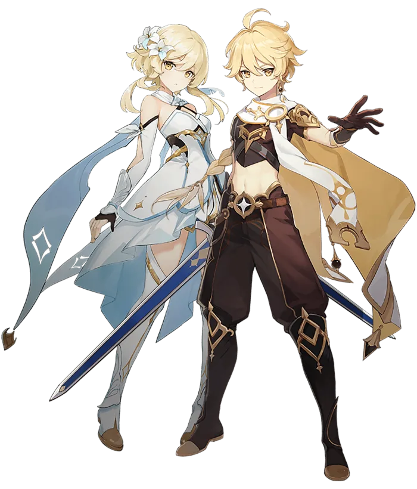
Mục lục
Mở Đầu
Màn I Ma ThầnNgười Phương Xa Đuổi Theo GióNhiệm vụ Ma Thần — Mondstadt · 10 phần
Màn I Ma Thần
Người Phương Xa Đuổi Theo Gió
Nhiệm vụ Ma Thần — Mondstadt · 10 phần
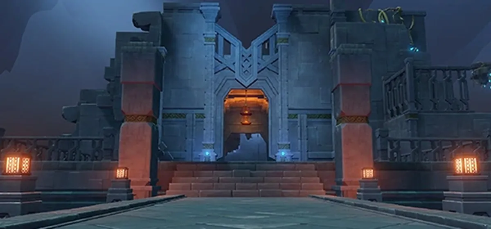
Màn I.1 Nhiệm vụ bắt buộcBa Ngôi Đền Của Tứ PhongNhiệm vụ bắt buộc để hoàn thành Màn I — Amber, Kaeya, Lisa · 4 phần
Màn I.1 Nhiệm vụ bắt buộc
Ba Ngôi Đền Của Tứ Phong
Nhiệm vụ bắt buộc để hoàn thành Màn I — Amber, Kaeya, Lisa · 4 phần
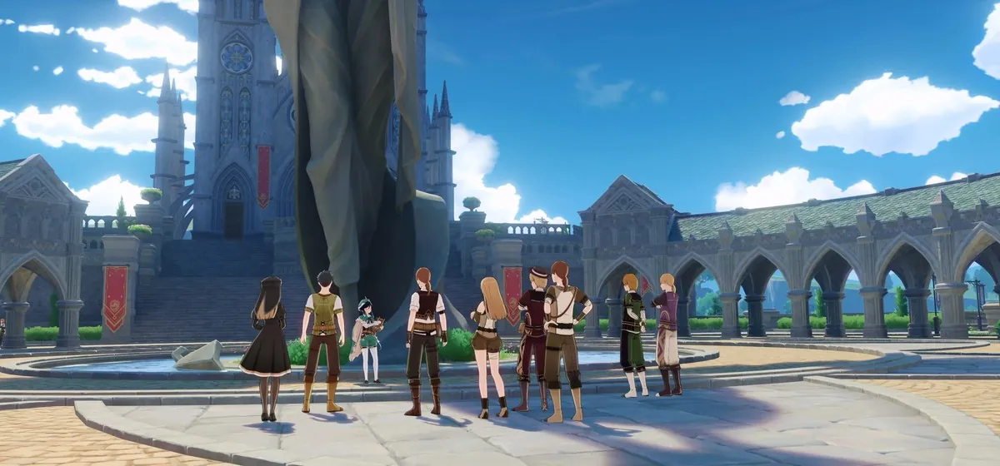
Màn II Ma ThầnVì Một Ngày Mai Không Rơi LệNhiệm vụ Ma Thần — Mondstadt · 15 phần
Màn II Ma Thần
Vì Một Ngày Mai Không Rơi Lệ
Nhiệm vụ Ma Thần — Mondstadt · 15 phần
- Phần 1Mondstadt Chìm Trong Sự Ám Ảnh
- Phần 2Không Hẹn Mà Gặp
- Phần 3Tên Nhóc Màu Xanh Đó
- Phần 4Nghe Theo Hướng Gió
- Phần 5Kế Hoạch Của Venti
- Phần 6Kế Hoạch Mới Của Venti
- Phần 7Chạy Trốn
- Phần 8Cuộc Nói Chuyện Sau Hậu Trường
- Phần 9Đuổi Theo Bóng Người
- Phần 10Hiện Trạng Của Bảo Vật
- Phần 11Giọt Nước Mắt Bị Bỏ Quên
- Phần 12Giọt Nước Mắt Được Cất Giấu
- Phần 13Giọt Nước Mắt Bị Đánh Cắp
- Phần 14Giọt Nước Mắt Thuần Khiết
- Phần 15Gặp Gỡ Rồng
 Màn III Ma ThầnBài Ca Về Rồng Và Tự DoNhiệm vụ Ma Thần — Mondstadt · 8 phần
Màn III Ma ThầnBài Ca Về Rồng Và Tự DoNhiệm vụ Ma Thần — Mondstadt · 8 phần
Màn III Ma Thần
Bài Ca Về Rồng Và Tự Do
Nhiệm vụ Ma Thần — Mondstadt · 8 phần
Chương I · Liyue
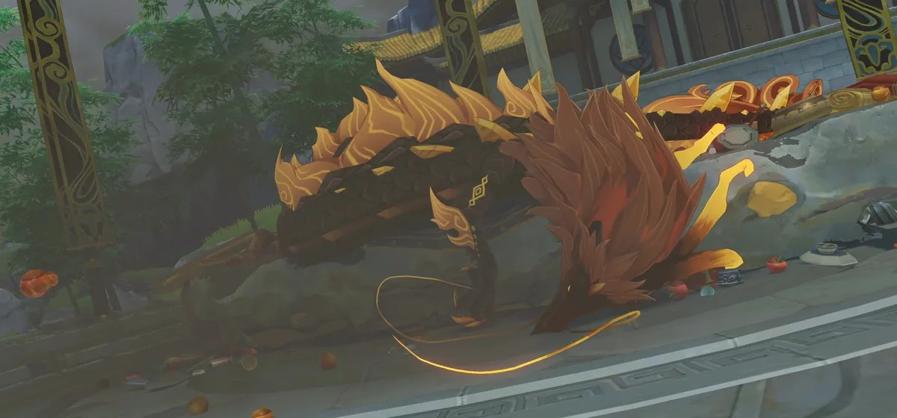
Màn I Ma ThầnPhù Thế Phù Sinh Thiên Nham GianNhiệm vụ Ma Thần — Liyue · 6 phần
Màn I Ma Thần
Phù Thế Phù Sinh Thiên Nham Gian
Nhiệm vụ Ma Thần — Liyue · 6 phần
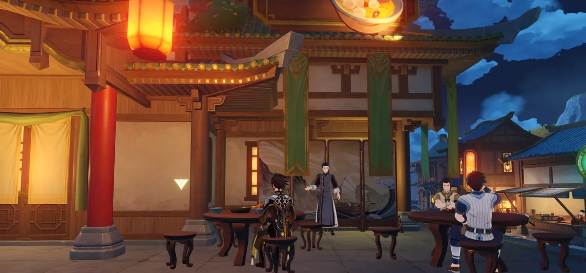
Màn II Ma ThầnLời Tạm Biệt Thể Xác Vĩnh HằngNhiệm vụ Ma Thần — Liyue · 7 phần
Màn II Ma Thần
Lời Tạm Biệt Thể Xác Vĩnh Hằng
Nhiệm vụ Ma Thần — Liyue · 7 phần
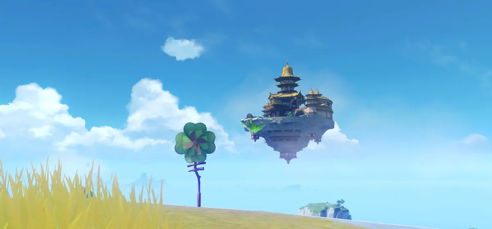
Màn III Ma ThầnNgôi Sao Đang ĐếnNhiệm vụ Ma Thần — Liyue · 6 phần
Màn III Ma Thần
Ngôi Sao Đang Đến
Nhiệm vụ Ma Thần — Liyue · 6 phần
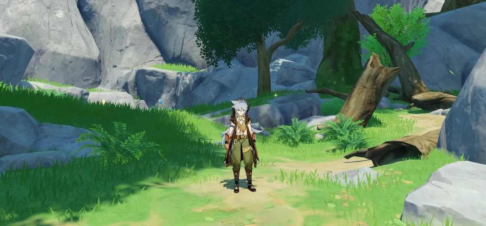
Màn III.1 Nhiệm vụ bắt buộcÝ Nghĩa Của LupicalNhiệm vụ nhân vật bắt buộc để mở Chương I · Màn IV — Chương Tiểu Lang - Màn I (Razor) · 4 phần
Màn III.1 Nhiệm vụ bắt buộc
Ý Nghĩa Của Lupical
Nhiệm vụ nhân vật bắt buộc để mở Chương I · Màn IV — Chương Tiểu Lang - Màn I (Razor) · 4 phần
Màn III.2 Nhiệm vụ bắt buộcGió, Đôi Cánh Và Dũng KhíNhiệm vụ nhân vật bắt buộc để mở Chương I · Màn IV — Chương Tiểu Thố - Màn I (Amber) · 5 phần
Màn III.2 Nhiệm vụ bắt buộc
Gió, Đôi Cánh Và Dũng Khí
Nhiệm vụ nhân vật bắt buộc để mở Chương I · Màn IV — Chương Tiểu Thố - Màn I (Amber) · 5 phần
 Màn IV · Giới Thiệu Nhiệm vụ bắt buộcDainsleifNhiệm vụ mở đầu bắt buộc của Chương I · Màn IV — Người Giữ Cành · 1 phần
Màn IV · Giới Thiệu Nhiệm vụ bắt buộcDainsleifNhiệm vụ mở đầu bắt buộc của Chương I · Màn IV — Người Giữ Cành · 1 phần
Màn IV · Giới Thiệu Nhiệm vụ bắt buộc
Dainsleif
Nhiệm vụ mở đầu bắt buộc của Chương I · Màn IV — Người Giữ Cành · 1 phần
 Màn IV Ma ThầnChúng Ta Ắt Sẽ Trùng PhùngNhiệm vụ Ma Thần — Mondstadt và Liyue · 4 phần
Màn IV Ma ThầnChúng Ta Ắt Sẽ Trùng PhùngNhiệm vụ Ma Thần — Mondstadt và Liyue · 4 phần
Màn IV Ma Thần
Chúng Ta Ắt Sẽ Trùng Phùng
Nhiệm vụ Ma Thần — Mondstadt và Liyue · 4 phần
Chương II · Inazuma
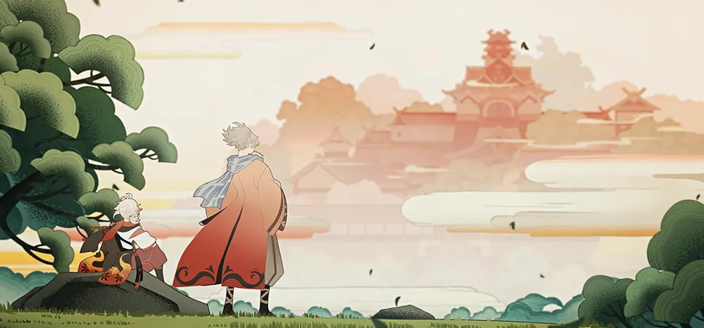
Mở Đầu Ma ThầnGió Thu Vén Áo Hỏi Lá ĐỏNhiệm vụ Ma Thần — Liyue · 3 phần
Mở Đầu Ma Thần
Gió Thu Vén Áo Hỏi Lá Đỏ
Nhiệm vụ Ma Thần — Liyue · 3 phần
 Màn I Ma ThầnLôi Thần Uy Nghiêm, Địa Đàng Vĩnh HằngNhiệm vụ Ma Thần — Inazuma · 8 phần
Màn I Ma ThầnLôi Thần Uy Nghiêm, Địa Đàng Vĩnh HằngNhiệm vụ Ma Thần — Inazuma · 8 phần
Màn I Ma Thần
Lôi Thần Uy Nghiêm, Địa Đàng Vĩnh Hằng
Nhiệm vụ Ma Thần — Inazuma · 8 phần
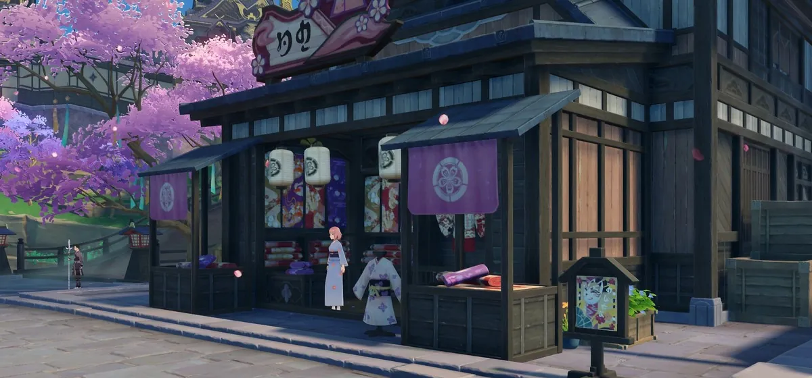
Màn I.1 Nhiệm vụ bắt buộcCâu Chuyện Về Hạc Và Thỏ TrắngNhiệm vụ nhân vật bắt buộc để mở Chương II · Màn II — Chương Tuyết Hạc - Màn I (Kamisato Ayaka) · 5 phần
Màn I.1 Nhiệm vụ bắt buộc
Câu Chuyện Về Hạc Và Thỏ Trắng
Nhiệm vụ nhân vật bắt buộc để mở Chương II · Màn II — Chương Tuyết Hạc - Màn I (Kamisato Ayaka) · 5 phần
Màn I.2 Nhiệm vụ bắt buộcVĩnh hằng như một giấc mơNhiệm vụ nhân vật bắt buộc để mở Chương II · Màn II — Chương Lưu Kim - Màn I (Yoimiya) · 4 phần
Màn I.2 Nhiệm vụ bắt buộc
Vĩnh hằng như một giấc mơ
Nhiệm vụ nhân vật bắt buộc để mở Chương II · Màn II — Chương Lưu Kim - Màn I (Yoimiya) · 4 phần
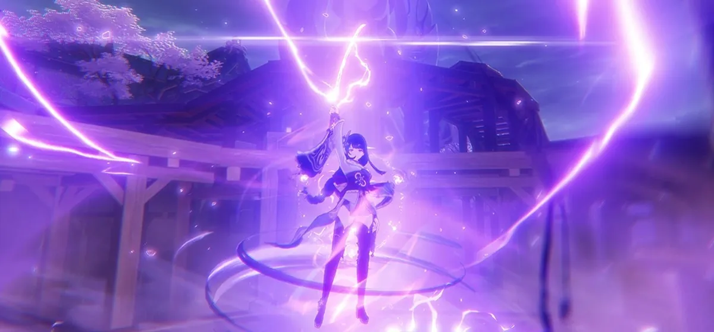
Màn II Ma ThầnTâm Vô Tạp Niệm, Bất Sinh Bất DiệtNhiệm vụ Ma Thần — Inazuma · 2 phần
Màn II Ma Thần
Tâm Vô Tạp Niệm, Bất Sinh Bất Diệt
Nhiệm vụ Ma Thần — Inazuma · 2 phần
 Màn III Ma ThầnThiên Thủ Bách Nhãn, Thiên Hạ Nhân GianNhiệm vụ Ma Thần — Inazuma · 9 phần
Màn III Ma ThầnThiên Thủ Bách Nhãn, Thiên Hạ Nhân GianNhiệm vụ Ma Thần — Inazuma · 9 phần
Màn III Ma Thần
Thiên Thủ Bách Nhãn, Thiên Hạ Nhân Gian
Nhiệm vụ Ma Thần — Inazuma · 9 phần
 Chương Đệm · Màn I Ma ThầnPhong Khởi Hạc QuyNhiệm vụ Ma Thần — Liyue · 4 phần
Chương Đệm · Màn I Ma ThầnPhong Khởi Hạc QuyNhiệm vụ Ma Thần — Liyue · 4 phần
Chương Đệm · Màn I Ma Thần
Phong Khởi Hạc Quy
Nhiệm vụ Ma Thần — Liyue · 4 phần
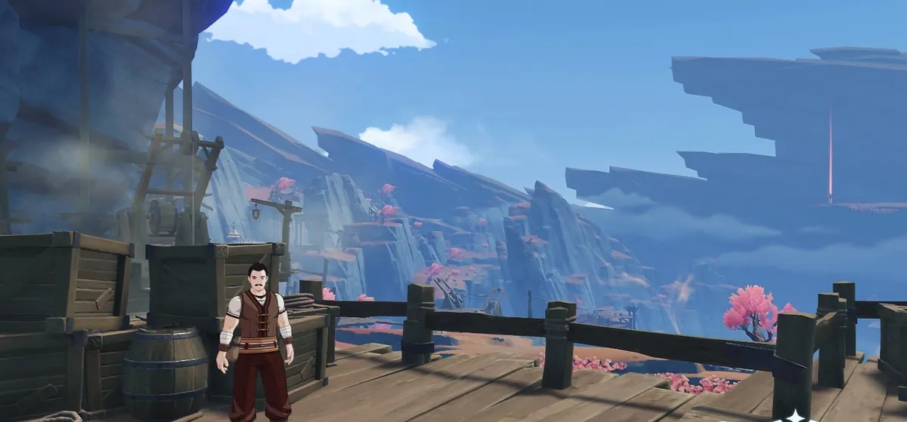
Màn IV Ma ThầnKhúc An Hồn Nơi Đáy VựcNhiệm vụ Ma Thần — Liyue · 4 phần
Màn IV Ma Thần
Khúc An Hồn Nơi Đáy Vực
Nhiệm vụ Ma Thần — Liyue · 4 phần
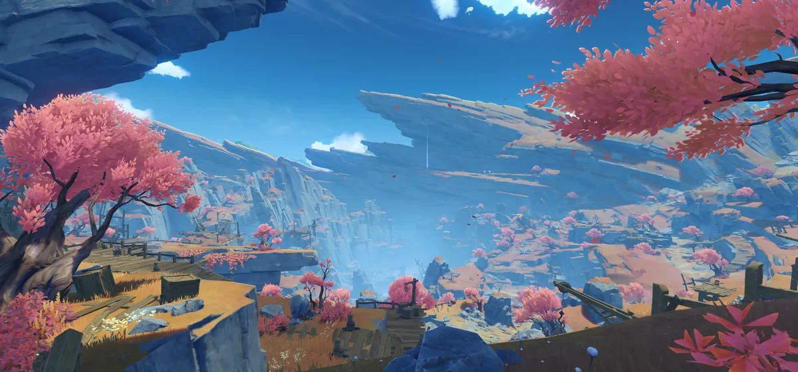
Chương Đệm · Màn I.1 Nhiệm vụ bắt buộcHành Trình Bên Trong Vực Đá SâuNhiệm vụ thế giới bắt buộc để mở Chương Đệm · Màn II — Vực Đá Sâu, Liyue · 6 phần
Chương Đệm · Màn I.1 Nhiệm vụ bắt buộc
Hành Trình Bên Trong Vực Đá Sâu
Nhiệm vụ thế giới bắt buộc để mở Chương Đệm · Màn II — Vực Đá Sâu, Liyue · 6 phần
 Chương Đệm · Màn II Ma ThầnLộ Trình Nguy HiểmNhiệm vụ Ma Thần — Liyue · 5 phần
Chương Đệm · Màn II Ma ThầnLộ Trình Nguy HiểmNhiệm vụ Ma Thần — Liyue · 5 phần
Chương Đệm · Màn II Ma Thần
Lộ Trình Nguy Hiểm
Nhiệm vụ Ma Thần — Liyue · 5 phần
Chương III · Sumeru
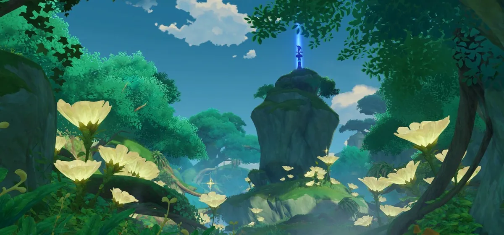
Màn I Ma ThầnXuyên Qua Màn Sương Và Rừng RậmNhiệm vụ Ma Thần — Sumeru · 7 phần
Màn I Ma Thần
Xuyên Qua Màn Sương Và Rừng Rậm
Nhiệm vụ Ma Thần — Sumeru · 7 phần
 Màn II Ma ThầnBình Minh Của Ngàn Đóa HồngNhiệm vụ Ma Thần — Sumeru · 7 phần
Màn II Ma ThầnBình Minh Của Ngàn Đóa HồngNhiệm vụ Ma Thần — Sumeru · 7 phần
Màn II Ma Thần
Bình Minh Của Ngàn Đóa Hồng
Nhiệm vụ Ma Thần — Sumeru · 7 phần
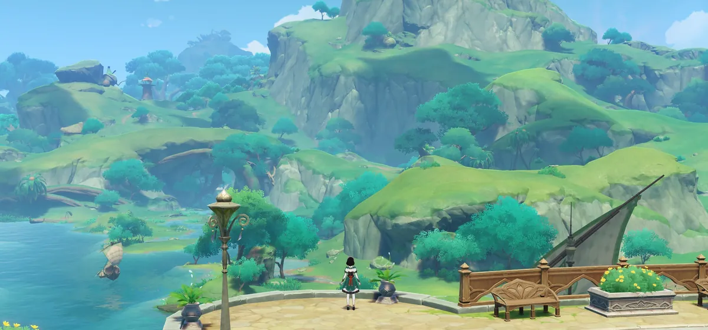
Màn II · Kết Ma ThầnBình Minh Của Ngàn Đóa Hồng - KếtPhần cuối của Chương III · Màn II — nhiệm vụ “Bình Minh” (Chương 3 Màn 2 - Kết) · 1 phần
Màn II · Kết Ma Thần
Bình Minh Của Ngàn Đóa Hồng - Kết
Phần cuối của Chương III · Màn II — nhiệm vụ “Bình Minh” (Chương 3 Màn 2 - Kết) · 1 phần
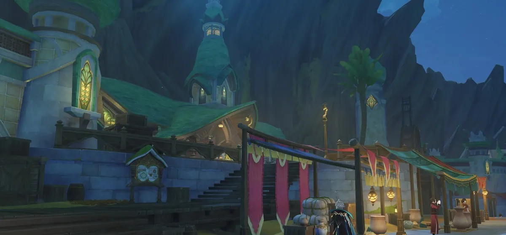
Màn III Ma ThầnẢo Mộng, Trống Rỗng Và Dối GianNhiệm vụ Ma Thần — Sumeru · 3 phần
Màn III Ma Thần
Ảo Mộng, Trống Rỗng Và Dối Gian
Nhiệm vụ Ma Thần — Sumeru · 3 phần
 Màn IV Ma ThầnXích Thổ Chi Vương Và Tam Triều Thánh GiảNhiệm vụ Ma Thần — Sumeru · 3 phần
Màn IV Ma ThầnXích Thổ Chi Vương Và Tam Triều Thánh GiảNhiệm vụ Ma Thần — Sumeru · 3 phần
Màn IV Ma Thần
Xích Thổ Chi Vương Và Tam Triều Thánh Giả
Nhiệm vụ Ma Thần — Sumeru · 3 phần
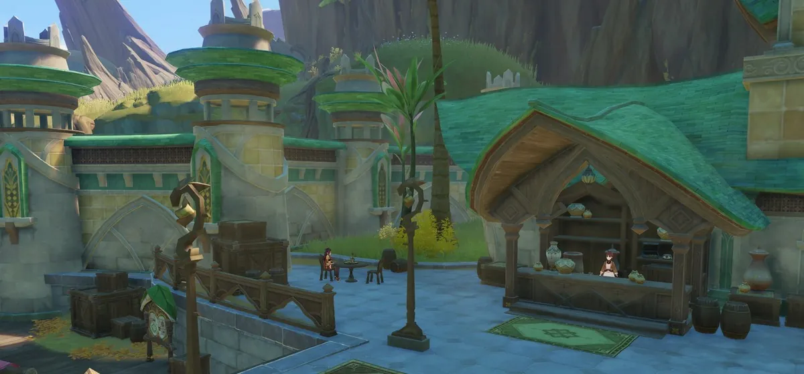
Màn V Ma ThầnAkasha Rung Động, Kiếp Hỏa Dâng TràoNhiệm vụ Ma Thần — Sumeru · 5 phần
Màn V Ma Thần
Akasha Rung Động, Kiếp Hỏa Dâng Trào
Nhiệm vụ Ma Thần — Sumeru · 5 phần
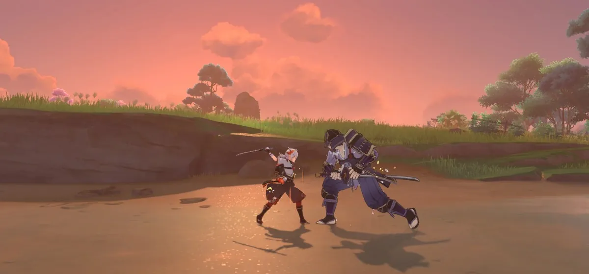
Chương Đệm · Màn II.1 Nhiệm vụ bắt buộcCố Nhân Xa LạNhiệm vụ nhân vật bắt buộc để mở Chương Đệm · Màn III — Chương Phong Đỏ - Màn I (Kaedehara Kazuha) · 3 phần
Chương Đệm · Màn II.1 Nhiệm vụ bắt buộc
Cố Nhân Xa Lạ
Nhiệm vụ nhân vật bắt buộc để mở Chương Đệm · Màn III — Chương Phong Đỏ - Màn I (Kaedehara Kazuha) · 3 phần
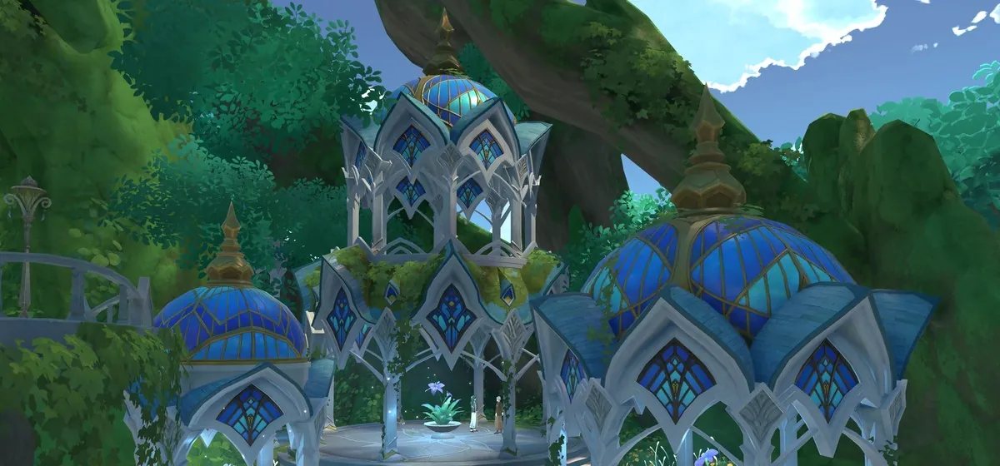
Chương Đệm · Màn III Ma ThầnCội Nguồn Nghiêng NgảNhiệm vụ Ma Thần — Sumeru · 4 phần
Chương Đệm · Màn III Ma Thần
Cội Nguồn Nghiêng Ngả
Nhiệm vụ Ma Thần — Sumeru · 4 phần
 Màn VI Ma ThầnCaribertNhiệm vụ Ma Thần — Sumeru · 4 phần
Màn VI Ma ThầnCaribertNhiệm vụ Ma Thần — Sumeru · 4 phần
Màn VI Ma Thần
Caribert
Nhiệm vụ Ma Thần — Sumeru · 4 phần
Chương IV · Fontaine
 Màn I Ma ThầnKhúc Dạo Đầu Của Sương Trắng Và Sóng ĐenNhiệm vụ Ma Thần — Fontaine · 3 phần
Màn I Ma ThầnKhúc Dạo Đầu Của Sương Trắng Và Sóng ĐenNhiệm vụ Ma Thần — Fontaine · 3 phần
Màn I Ma Thần
Khúc Dạo Đầu Của Sương Trắng Và Sóng Đen
Nhiệm vụ Ma Thần — Fontaine · 3 phần
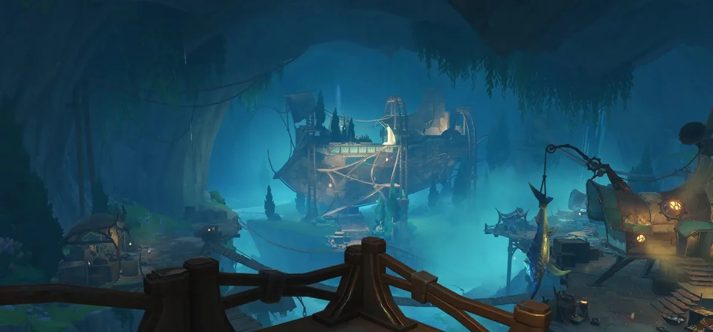
Màn II Ma ThầnNhư Làn Mưa Nhẹ Không Rõ Nguyên NhânNhiệm vụ Ma Thần — Fontaine · 3 phần
Màn II Ma Thần
Như Làn Mưa Nhẹ Không Rõ Nguyên Nhân
Nhiệm vụ Ma Thần — Fontaine · 3 phần
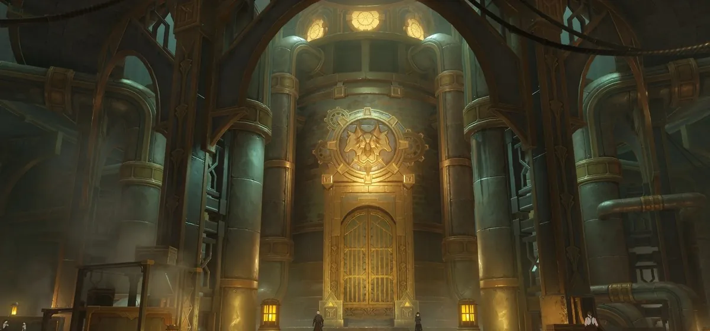
Màn III Ma ThầnNgôi Sao Tỏa Sáng Dưới Biển SâuNhiệm vụ Ma Thần — Fontaine · 4 phần
Màn III Ma Thần
Ngôi Sao Tỏa Sáng Dưới Biển Sâu
Nhiệm vụ Ma Thần — Fontaine · 4 phần
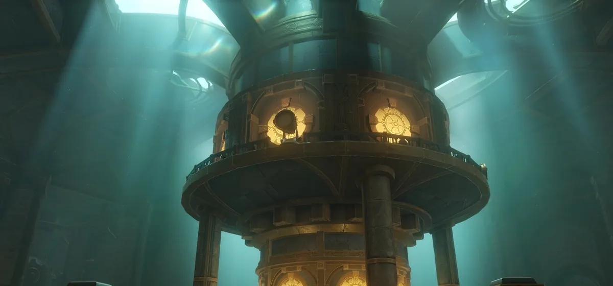
Màn IV Ma ThầnThảm Họa Cận KềNhiệm vụ Ma Thần — Fontaine · 5 phần
Màn IV Ma Thần
Thảm Họa Cận Kề
Nhiệm vụ Ma Thần — Fontaine · 5 phần
Màn V Ma ThầnVũ Điệu Của Tội LỗiNhiệm vụ Ma Thần — Fontaine · 6 phần
Màn V Ma Thần
Vũ Điệu Của Tội Lỗi
Nhiệm vụ Ma Thần — Fontaine · 6 phần
 Màn VI Ma ThầnCâu Chuyện Trước Khi NgủNhiệm vụ Ma Thần — Fontaine · 3 phần
Màn VI Ma ThầnCâu Chuyện Trước Khi NgủNhiệm vụ Ma Thần — Fontaine · 3 phần
Màn VI Ma Thần
Câu Chuyện Trước Khi Ngủ
Nhiệm vụ Ma Thần — Fontaine · 3 phần
Chương V · Natlan
Màn I Ma ThầnSắc Hoa Rực Rỡ Trong Hành Trình Nắng CháyNhiệm vụ Ma Thần — Natlan · 3 phần
Màn I Ma Thần
Sắc Hoa Rực Rỡ Trong Hành Trình Nắng Cháy
Nhiệm vụ Ma Thần — Natlan · 3 phần
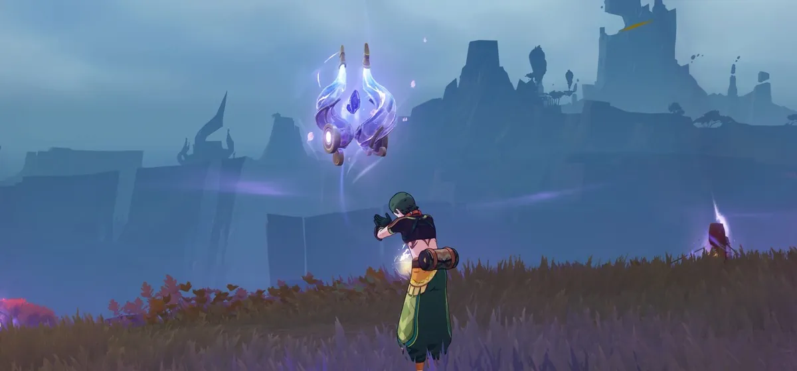
Màn II Ma ThầnĐá Đen Ẩn Dưới Lớp Đá TrắngNhiệm vụ Ma Thần — Natlan · 5 phần
Màn II Ma Thần
Đá Đen Ẩn Dưới Lớp Đá Trắng
Nhiệm vụ Ma Thần — Natlan · 5 phần
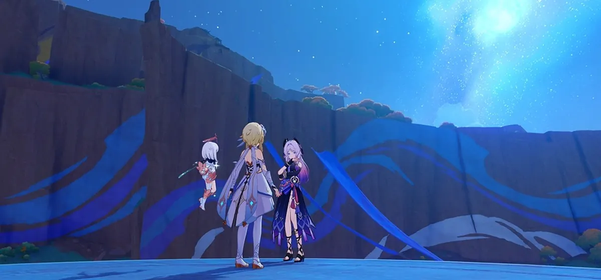
Màn III Ma ThầnBên Kia Của Gương Và KhóiNhiệm vụ Ma Thần — Natlan · 3 phần
Màn III Ma Thần
Bên Kia Của Gương Và Khói
Nhiệm vụ Ma Thần — Natlan · 3 phần
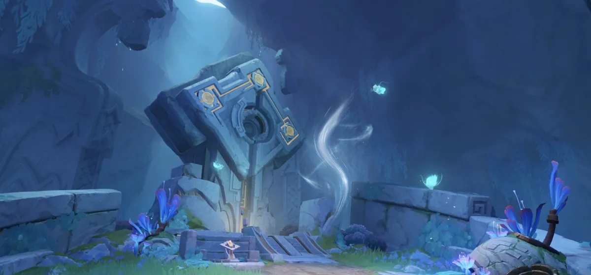
Màn IV Ma ThầnCầu Vồng Định Sẵn Sẽ CháyNhiệm vụ Ma Thần — Natlan · 6 phần
Màn IV Ma Thần
Cầu Vồng Định Sẵn Sẽ Cháy
Nhiệm vụ Ma Thần — Natlan · 6 phần
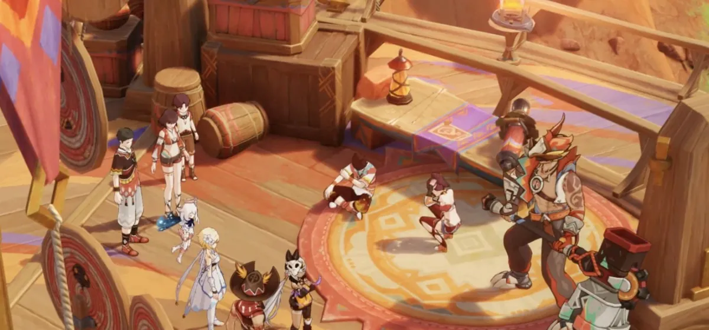
Phần Đệm Ma ThầnVạn Hỏa Quy NhấtNhiệm vụ Ma Thần — Natlan · 1 phần
Phần Đệm Ma Thần
Vạn Hỏa Quy Nhất
Nhiệm vụ Ma Thần — Natlan · 1 phần
 Màn V Ma ThầnBài Thơ Về Sự Tái Sinh Rực RỡNhiệm vụ Ma Thần — Natlan · 5 phần
Màn V Ma ThầnBài Thơ Về Sự Tái Sinh Rực RỡNhiệm vụ Ma Thần — Natlan · 5 phần
Màn V Ma Thần
Bài Thơ Về Sự Tái Sinh Rực Rỡ
Nhiệm vụ Ma Thần — Natlan · 5 phần
Chương Đệm · Màn III.1 Nhiệm vụ bắt buộcBáo Cáo Quan Sát Nhà Lữ HànhNhiệm vụ nhân vật bắt buộc để mở Chương Đệm · Màn IV — Chương Vôi Trắng - Màn I (Albedo) · 6 phần
Chương Đệm · Màn III.1 Nhiệm vụ bắt buộc
Báo Cáo Quan Sát Nhà Lữ Hành
Nhiệm vụ nhân vật bắt buộc để mở Chương Đệm · Màn IV — Chương Vôi Trắng - Màn I (Albedo) · 6 phần
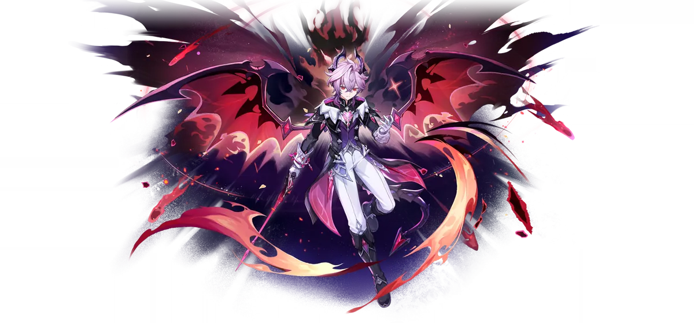
Chương Đệm · Màn IV Ma ThầnNgộ BiệnNhiệm vụ Ma Thần — Mondstadt · 3 phần
Chương Đệm · Màn IV Ma Thần
Ngộ Biện
Nhiệm vụ Ma Thần — Mondstadt · 3 phần
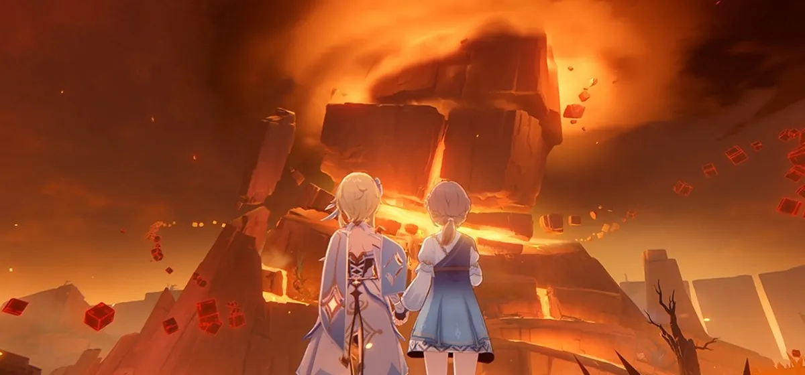
Màn VI Ma ThầnThời Không Mà Ta Tồn TạiNhiệm vụ Ma Thần — Natlan · 3 phần
Màn VI Ma Thần
Thời Không Mà Ta Tồn Tại
Nhiệm vụ Ma Thần — Natlan · 3 phần
Bài Ca Không Nguyệt · Nod-Krai
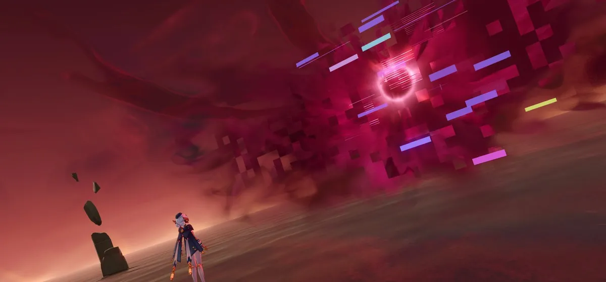
Mở Đầu Ma ThầnĐường Về NhàNhiệm vụ Ma Thần — Nod-Krai · 3 phần
Mở Đầu Ma Thần
Đường Về Nhà
Nhiệm vụ Ma Thần — Nod-Krai · 3 phần
 Màn I Ma ThầnVũ Điệu Của Rừng Sương Và Sóng TuyếtNhiệm vụ Ma Thần — Nod-Krai · 3 phần
Màn I Ma ThầnVũ Điệu Của Rừng Sương Và Sóng TuyếtNhiệm vụ Ma Thần — Nod-Krai · 3 phần
Màn I Ma Thần
Vũ Điệu Của Rừng Sương Và Sóng Tuyết
Nhiệm vụ Ma Thần — Nod-Krai · 3 phần
 Màn II Ma ThầnBi Ca Của Cát Bụi Và Ánh ĐènNhiệm vụ Ma Thần — Nod-Krai · 5 phần
Màn II Ma ThầnBi Ca Của Cát Bụi Và Ánh ĐènNhiệm vụ Ma Thần — Nod-Krai · 5 phần
Màn II Ma Thần
Bi Ca Của Cát Bụi Và Ánh Đèn
Nhiệm vụ Ma Thần — Nod-Krai · 5 phần
 Màn III Ma ThầnVương Quốc Không Tồn TạiNhiệm vụ Ma Thần — Nod-Krai · 3 phần
Màn III Ma ThầnVương Quốc Không Tồn TạiNhiệm vụ Ma Thần — Nod-Krai · 3 phần
Màn III Ma Thần
Vương Quốc Không Tồn Tại
Nhiệm vụ Ma Thần — Nod-Krai · 3 phần
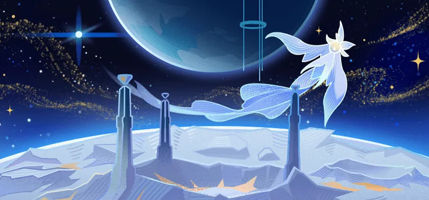
Màn IV Ma ThầnBi Ca Ánh Trăng TànNhiệm vụ Ma Thần — Nod-Krai · 3 phần
Màn IV Ma Thần
Bi Ca Ánh Trăng Tàn
Nhiệm vụ Ma Thần — Nod-Krai · 3 phần
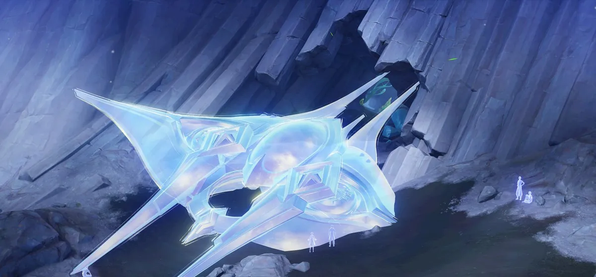
Màn V Ma ThầnThơ Dạ Hành Cực BắcNhiệm vụ Ma Thần — Nod-Krai · 2 phần
Màn V Ma Thần
Thơ Dạ Hành Cực Bắc
Nhiệm vụ Ma Thần — Nod-Krai · 2 phần
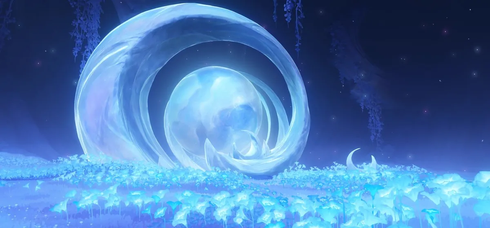
Màn VI Ma ThầnÁnh Trăng Tan Trong Sương SớmNhiệm vụ Ma Thần — Nod-Krai · 3 phần
Màn VI Ma Thần
Ánh Trăng Tan Trong Sương Sớm
Nhiệm vụ Ma Thần — Nod-Krai · 3 phần
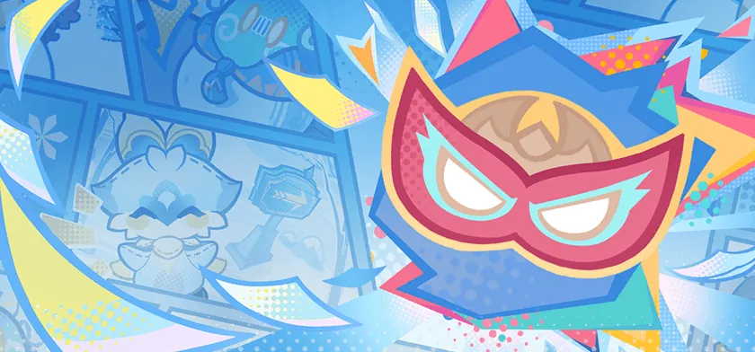
Màn VII Ma ThầnNếu Một Đêm Đông, Có Vị Lữ KháchNhiệm vụ Ma Thần — Nod-Krai · 3 phần
Màn VII Ma Thần
Nếu Một Đêm Đông, Có Vị Lữ Khách
Nhiệm vụ Ma Thần — Nod-Krai · 3 phần
 Màn VIII Ma ThầnMặt Trăng Thực SựNhiệm vụ Ma Thần — Nod-Krai · 3 phần
Màn VIII Ma ThầnMặt Trăng Thực SựNhiệm vụ Ma Thần — Nod-Krai · 3 phần
Màn VIII Ma Thần
Mặt Trăng Thực Sự
Nhiệm vụ Ma Thần — Nod-Krai · 3 phần
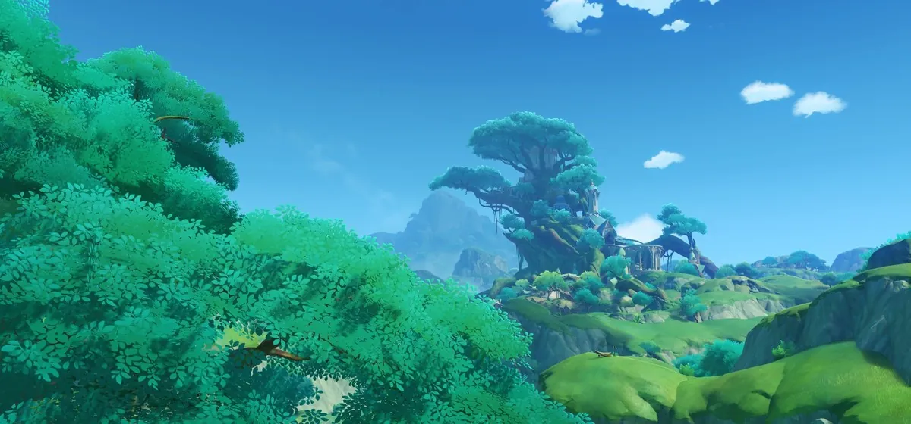
Màn IX Ma ThầnThân Thổ Tiêu Tan, Ngũ Uẩn Chuyển BiếnNhiệm vụ Ma Thần — Bài Ca Không Nguyệt · Sumeru · 3 phần
Màn IX Ma Thần
Thân Thổ Tiêu Tan, Ngũ Uẩn Chuyển Biến
Nhiệm vụ Ma Thần — Bài Ca Không Nguyệt · Sumeru · 3 phần
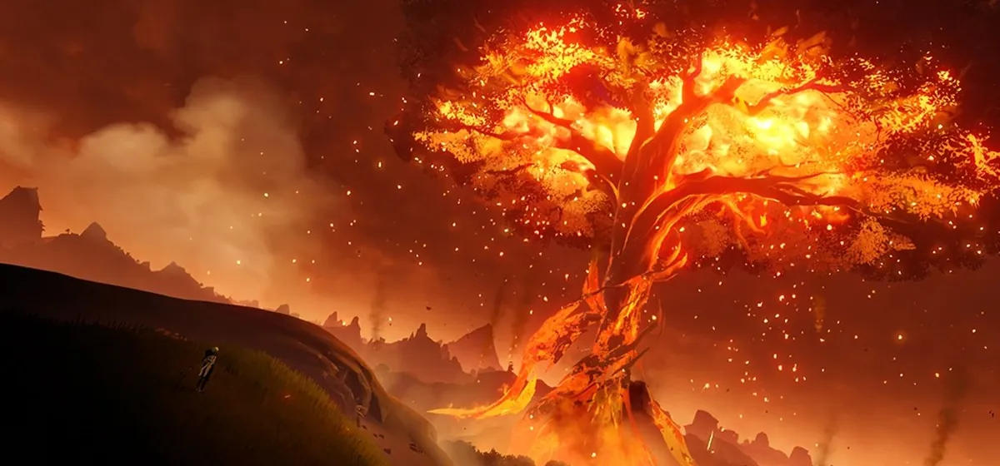
Màn X Ma ThầnVô Vàn Con Đường, Biến Chuyển Và Tan RãNhiệm vụ Ma Thần — Bài Ca Không Nguyệt · Sumeru · 4 phần
Màn X Ma Thần
Vô Vàn Con Đường, Biến Chuyển Và Tan Rã
Nhiệm vụ Ma Thần — Bài Ca Không Nguyệt · Sumeru · 4 phần
Chương VII · Snezhnaya
Màn I Ma ThầnĐất Nước Của Tuyết Không Được Thần Thương YêuNhiệm vụ Ma Thần — Snezhnaya · 4 phần
Màn I Ma Thần
Đất Nước Của Tuyết Không Được Thần Thương Yêu
Nhiệm vụ Ma Thần — Snezhnaya · 4 phần
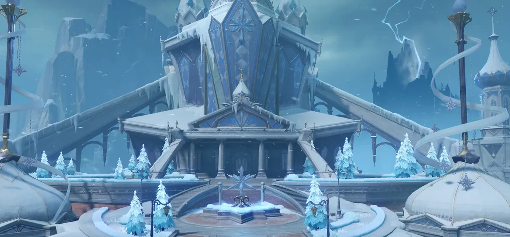
Màn II Ma ThầnDạ Khúc Của Những Linh Hồn Đã ChếtNhiệm vụ Ma Thần — Snezhnaya · 5 phần
Màn II Ma Thần
Dạ Khúc Của Những Linh Hồn Đã Chết
Nhiệm vụ Ma Thần — Snezhnaya · 5 phần
 Màn III Ma ThầnĐêm Trắng Như Vừa Tỉnh MộngNhiệm vụ Ma Thần — Snezhnaya · 3 phần
Màn III Ma ThầnĐêm Trắng Như Vừa Tỉnh MộngNhiệm vụ Ma Thần — Snezhnaya · 3 phần
Màn III Ma Thần
Đêm Trắng Như Vừa Tỉnh Mộng
Nhiệm vụ Ma Thần — Snezhnaya · 3 phần
 Màn IV Ma ThầnKhúc An Hồn Cõi ÂmNhiệm vụ Ma Thần — Snezhnaya · 3 phần
Màn IV Ma ThầnKhúc An Hồn Cõi ÂmNhiệm vụ Ma Thần — Snezhnaya · 3 phần
Màn IV Ma Thần
Khúc An Hồn Cõi Âm
Nhiệm vụ Ma Thần — Snezhnaya · 3 phần
 Màn V Ma ThầnThời Khắc Hủy DiệtNhiệm vụ Ma Thần — Snezhnaya · 2 phần
Màn V Ma ThầnThời Khắc Hủy DiệtNhiệm vụ Ma Thần — Snezhnaya · 2 phần
Màn V Ma Thần
Thời Khắc Hủy Diệt
Nhiệm vụ Ma Thần — Snezhnaya · 2 phần
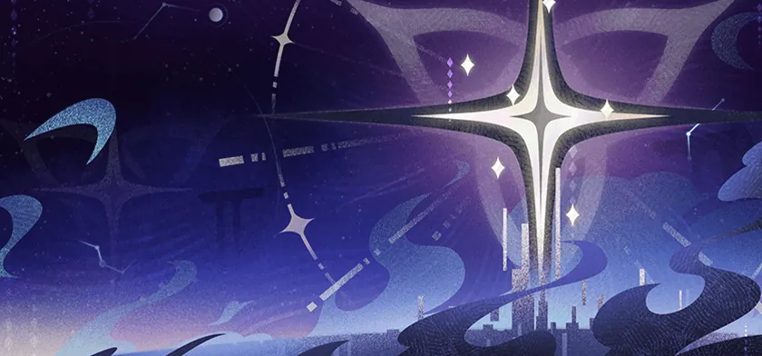
Màn VI Ma ThầnNgày Hôm Qua Gửi Từ Bờ Bên KiaNhiệm vụ Ma Thần — Snezhnaya · 6 phần
Màn VI Ma Thần
Ngày Hôm Qua Gửi Từ Bờ Bên Kia
Nhiệm vụ Ma Thần — Snezhnaya · 6 phần